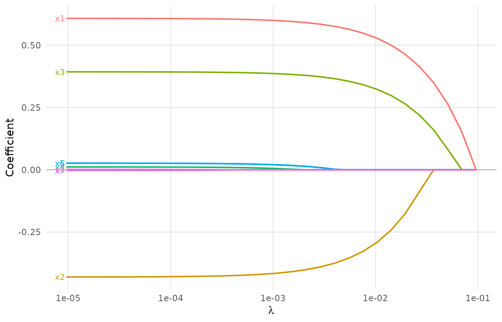
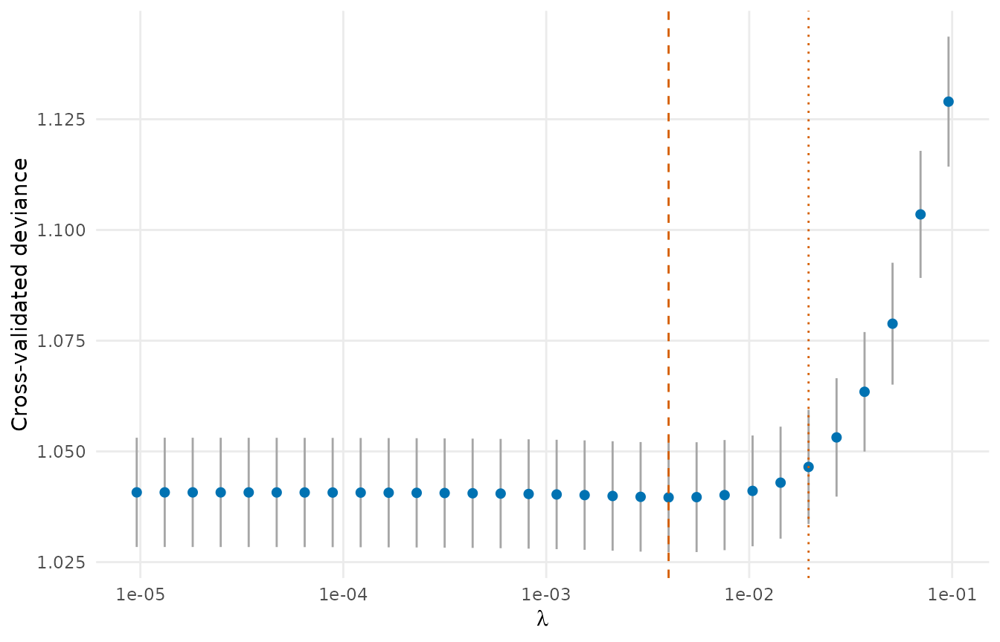

A measure carries a risk-adjustment set of tens to hundreds of candidate variables. Which of them the model should keep is a selection problem, and it has one feature that ordinary penalized regression does not handle: the provider effects must stay in the model, unpenalized, while the risk factors are selected. Selecting on a pooled model (without provider effects) inflates the false discoveries, because the omitted provider effect acts as a confounder shared by every risk factor correlated with it.
var_select() fits the lasso or group-lasso path of the
fixed-effect model with the provider effects kept, for binary, binomial
and survival outcomes; cv() chooses the penalty by
cross-validation.
The objective
\[-\frac{1}{n}\,\ell(\gamma, \beta) + \lambda \sum_j m_j |\beta_j| \qquad\text{or}\qquad -\frac{1}{n}\,\ell(\gamma, \beta) + \lambda \sum_g m_g \|\beta_g\|_2 ,\]
with the provider effects \(\gamma\)
never penalized. The path is solved by coordinate descent on
standardized covariates (each group orthonormalized) with one Newton
step on the provider effects per cycle, warm starts along a decreasing
sequence of \(\lambda\) and an
active-set strategy, so that the provider effects are updated in closed
form from their own records and never form indicator columns (the
multi-layer algorithm of the KECC measures paper;
grplasso’s pp.lasso and
grp.lasso).
A lasso path
library(pprof)
d <- sim_kecc(n_providers = 60, n_covariates = 8, beta = c(0.6, -0.5, 0.4, 0, 0, 0, 0, 0),
seed = 4)
pd <- pp_data(d, y = "y", x = paste0("x", 1:8), provider = "provider", patient = "patient",
message = FALSE)
path <- var_select(pd, n_lambda = 30)
path
#> Lasso path of the logistic model with unpenalized provider effects
#> 7292 rows, 60 providers, 8 covariates (8 penalized)
#> 30 values of lambda from 0.09599 to 9.599e-06; selected covariates from 0 to 8
plot(path)
-
penalize: the covariates that carry a penalty (default all); the others, a committee’s mandatory adjusters say, enter unpenalized. -
multiplier: per-covariate (or per-group) penalty multipliers. -
lambda,n_lambda,lambda_min_ratio: the penalty sequence; by default 100 values from the smallest \(\lambda\) with every penalized coefficient zero down to \(10^{-4}\) times it.
The coefficients at any penalty, and the selected set:
coef(path, lambda = path$lambda[12])$beta
#> x1 x2 x3 x4 x5 x6
#> 0.583846156 -0.389292799 0.372983496 0.000000000 0.008571404 0.008961461
#> x7 x8
#> 0.000000000 0.000000000
selected_covariates(path, which = c(8, 15, 30))
#> $`0.0103925`
#> [1] "x1" "x2" "x3"
#>
#> $`0.00112512`
#> [1] "x1" "x2" "x3" "x4" "x5" "x6"
#>
#> $`9.5992e-06`
#> [1] "x1" "x2" "x3" "x4" "x5" "x6" "x7" "x8"Group lasso
A categorical risk factor coded as several 0/1 columns should enter or leave the model as a whole. Give each covariate a group label (0 for an unpenalized covariate); the penalty on a group is \(\sqrt{\text{size}}\) times the group norm by default.
grp <- var_select(pd, penalty = "group_lasso", group = c(1, 1, 2, 2, 3, 3, 0, 4), n_lambda = 30)
grp
#> Group-lasso path of the logistic model with unpenalized provider effects
#> 7292 rows, 60 providers, 8 covariates (7 penalized)
#> 30 values of lambda from 0.0721 to 7.21e-06; selected covariates from 0 to 7
selected_covariates(grp, which = 15)
#> $`0.000845114`
#> [1] "x1" "x2" "x3" "x4" "x5" "x6"Choosing the penalty: cross-validation
cv() refits the path on every training fold and scores
the held-out rows by the binomial deviance (the partial-likelihood
deviance per event for the Cox model, the person-period deviance for the
discrete-time model). Folds are formed within every
provider over its patients, so that each provider is present in
every training set; a provider held out entirely is predicted with the
median provider effect.
cvp <- cv(path, n_folds = 5, seed = 1)
cvp
#> Cross-validated lasso path (5 folds)
#> lambda_min 0.004008: 5 covariates selected (x1, x2, x3, x5, x6)
#> lambda_1se 0.01961: 3 covariates selected
plot(cvp)
cvp$selected_min
#> [1] "x1" "x2" "x3" "x5" "x6"
cvp$selected_1se
#> [1] "x1" "x2" "x3"lambda_min is the penalty with the smallest
cross-validated deviance, lambda_1se the largest penalty
within one standard error of it (fewer variables). For selecting risk
adjusters, the measure development work of the KECC measures uses
lambda_min and then refits the fixed-effect model on the
selected set:
pd_sel <- pp_data(d, y = "y", x = cvp$selected_min, provider = "provider",
patient = "patient", message = FALSE)
summary(fit_logistic_fe(pd_sel))
#> covariate estimate se statistic p lower
#> 1 x1 0.60743995 0.03160169 19.2217572 0.000000e+00 0.54550179
#> 2 x2 -0.42996348 0.05996075 -7.1707484 7.458885e-13 -0.54748440
#> 3 x3 0.39336177 0.02942045 13.3703497 0.000000e+00 0.33569874
#> 4 x5 0.02679156 0.02911418 0.9202237 3.574559e-01 -0.03027119
#> 5 x6 0.02689037 0.02905516 0.9254938 3.547091e-01 -0.03005669
#> upper
#> 1 0.66937812
#> 2 -0.31244256
#> 3 0.45102480
#> 4 0.08385430
#> 5 0.08383743Survival outcomes
On a survival pp_data() object the same calls fit:
-
model = "cox"(default): the Cox model stratified by provider (its baselines absorb the provider effects), with counting-process rows, weights and offsets as infit_cox(); the cross-validation loss is the partial-likelihood deviance of the held-out rows within their own strata. -
model = "discrete": the discrete-time hazard model \(\mathrm{logit}\, h_{jk} = \alpha_k + \gamma_i + Z_j^\top\beta\), with the periods the distinct event times, one row per subject (nostart), unpenalized period and provider effects and the lasso on \(\beta\). The likelihood is computed without expanding the data into person-periods. The provider effects are identified by a zero median.
s <- sim_kecc(n_providers = 40, rows_per_patient = c(1, 1), type = "survival",
n_covariates = 6, beta = c(0.6, -0.5, 0.4, 0, 0, 0), seed = 41)
ps <- pp_data(s, x = paste0("x", 1:6), provider = "provider", patient = "patient",
time = "stop", event = "event", cutoff = 0, message = FALSE)
cox_path <- var_select(ps, n_lambda = 20)
selected_covariates(cox_path, which = 20)
#> $`1.96475e-05`
#> [1] "x1" "x2" "x3" "x4" "x5" "x6"
s$stop <- ceiling(s$stop * 12) / 12 # monthly periods
psm <- pp_data(s, x = paste0("x", 1:6), provider = "provider", patient = "patient",
time = "stop", event = "event", cutoff = 0, message = FALSE)
disc <- var_select(psm, model = "discrete", n_lambda = 20)
disc
#> Lasso path of the discrete-time hazard model (period and provider effects)
#> 1544 rows, 40 providers, 6 covariates (6 penalized), 24 periods
#> 20 values of lambda from 0.1999 to 1.999e-05; selected covariates from 1 to 6At the smallest penalty of a long path the coefficients approach
those of the unpenalized model: survival::coxph() with
strata(provider) for the Cox model, a logistic regression
on the expanded person-period data with period and provider indicators
for the discrete-time model.
References
Breheny P, Huang J (2015). Group descent algorithms for nonconvex penalized linear and logistic regression models with grouped predictors. Statistics and Computing, 25, 173-187.
Friedman J, Hastie T, Tibshirani R (2010). Regularization paths for generalized linear models via coordinate descent. Journal of Statistical Software, 33(1), 1-22.